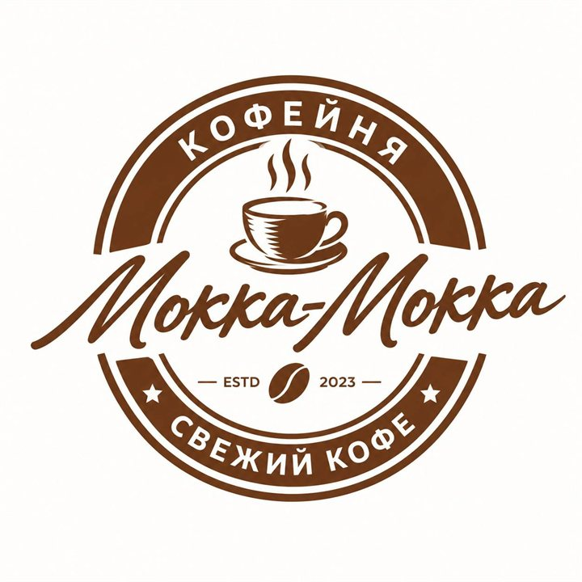

Кофейня в Бузулуке
Мокка-Мокка
Свежий кофе за 3 минуты, сытные завтраки и обеды по доступной цене — рядом с учёбой и работой.
Ежедневно 7:00–23:00
Почему к нам заходят
-
Свежий кофе
Свежеобжаренные зёрна и обученные бариста.
-
Быстро
Кофе — до 3 минут, комплексный обед — до 5 минут.
-
Доступно
Кофе от 100 ₽, комплексный обед — 300 ₽.
-
Уютно до ночи
Работаем без выходных до 23:00. Бесплатный Wi-Fi и 28 мест в зале.
Заказ с собой
Не хотите ждать? Закажите заранее — заберёте без очереди.
-
Позвоните
Наберите нас по телефону — кнопка ниже.
-
Назовите заказ
Скажите, что приготовить и во сколько зайдёте.
-
Заберите
Приходите — заказ уже ждёт вас на стойке.
Акции
-
Студентам −10%
Скидка по студенческому билету каждый день после 15:00.
-
«Мокка-карта»
Возвращаем 5% от чека баллами, с 10-го визита — 7%. Каждый 7-й кофе — в подарок.
-
В день рождения
Напиток в подарок имениннику.
-
Для офисов
Абонемент «10 обедов» со скидкой 10%.
Контакты
Адрес: г. Бузулук, ул. Комсомольская, 106Б
Телефон: +7 (000) 000-00-00 (демо-номер)
Часы работы: ежедневно 7:00–23:00
- Завтраки — 7:00–11:00
- Комплексные обеды — 11:00–16:00
- Кофе и выпечка — весь день
Мы в соцсетях
Загружаем карту…